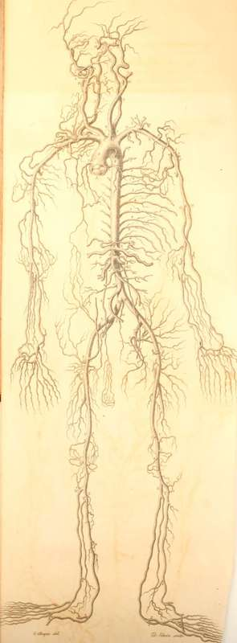

Scheme Of The Arterial System
Description
This section is from the book "Engravings Of The Arteries", by Charles Bell. Also available from Amazon: Engravings Of The Arteries; Illustrating The Anatomy Of The Human Body, And Serving As An Introduction To The Surgery Of The Arteries.
Scheme Of The Arterial System
Principal Divisions of the Arteries. | Branches of the Arteries. |
a. Valves of the Aorta. | |
B. The Ascending Aorta | 1. The Left Coronary Ai'tery. |
2. The Right Coronary Artery. | |
C. The Arteria Innominata.* | |
d. d. The Subclavian | 1. The Vertebral Artery. |
2. The Internal Mammary. | |
3. The Lower Thyroid Artery. | |
4. The Ascendant Branch of the Thyroid. | |
5. The Transversalis Colli. | |
6. The Transversalis Humeri. | |
7. The First and Second Intercostal s. | |
8. The Suprascapularis. |
* The Arteria Innominata commonly divides into the Right Carotid and Subclavian, but here the Left Carotid also is given from it.
Principal Division* of the Arteries. | Branches of the Arteries. | |
e. e. Axillary Arter | 1. Superior Thoracic Artery. 2. Thoracica Longior. 3. Thoracica Humcraria. 4. Subscapularis. | |
5. Circumflexa Posterior. | ||
6. Circumflexa Anterior. | ||
F. Y.The Brachial Artery* | 1. Profunda Humeri Superior.+ 2. Anastomoticus Major. 1. Recurrens Radialis Anterior. | |
g. The Radial Artery | 2. Arteria Superficialis Volse. | |
3. Arteria Palmaris Profunda. | ||
1. Recurrens Ulnaris Anterior. | ||
H. The Ulnar Artery | 2. Recurrens Ulnaris Posterior. 3. Arteria Dorsalis Ulnaris. .4. Arteria Palmaris Profunda. | |
i. Interosseous Artery | 1. Interossea Superior Perforans 2. Recurrens Interossea. | |
k. Carotid Artery. | 1. Arteria Thyroidea Superior. 2. Arteria Lingualis. 3. Arteria Labialis vel Facialis. | |
l. External Carotid | 4. Arteria Occipitalis. 5. Posterior Auris. 6. Arteria Maxillaris Interna. 7. Arteria Transversalis Faciei. 8. Arteria Temporalis. | |
* On the left side there is a high bifurcation of this Artery, + The Lesser Profunda is seen at 16, Plate VI.
m. Internal Carotid
1. Arteria Anterior Cerebri.
2. Arteria Media Cerebri.
3. Arteria Communicans.
n. Vertebral Artery.
* Arteria Cei-ebelli Posterior and Anterior.
o. Basilar Artery.
1. Arteria Communicans.
2. Arteria Cerebri Posterior.
p. Thoracic Aorta 1 to 10. Arteriae Intercostales.+
+ The Aorta, when it is behind the root of the lungs, gives three or four arteries to nourish their substance, called Bronchial Arteries. Lying beside the oesophagus, also, it gives to it a few arteries, the oesophagial arteries.
1. Arteria Phrenica.
2. Arteria Cceliaca.
3. Coronaria Ventriculi.
4. Arteria Hepatica.
5. Arteria Splenica.
6. Mesenterica Superior.
7. Arteria? Capsularis.
8. Arteriae Emulgentes.
9. Arteriae Spermaticae.
10. Mesenterica Inferior.
11. Arteriae Lumbares.
12. Arteriae Media Sacra.
R. Common Iliacs.
s. Internal Iliac
1. Arteria Obturatoria.
2. Arteria Glutea.
3. Arteria Ischiadica.
4. Arteria Pudica.
* For the Arteries of the Cerebellum, see Plate V. 10,11,12.
T. External Iliacs.
u. Femoral Artery
1. Arteria Epigastrica.
2. Circumflexa Ilii.
3. Profunda Femoris
1. Circumflexa Externa.
2. Circumflexa Interna.
3. Perforantes.
v. Popiliteal Artery
1. Arteria Articularis Superior Externa.
2. Interna.
3. Media.
4. Inferior Externa.
3. Interna.
x. Anterior Tibial Artery
1. Recurrens Tibialis Anticae.
2. Malleolaris Interna.
3.Externa.
4. Arteria Tarsea.
y. Posterior Tibial Artery
1. Plantaris Externa. 2.-Interna.
z. Fibular Artery
1. Anterior.
2. Posterior.
Continue to:
- prev: Back View Of The Heart
- Table of Contents
- next: Diaphragm, the Situation of the Heart, the Blood-vessels of the Breast, and the Abdominal Aorta